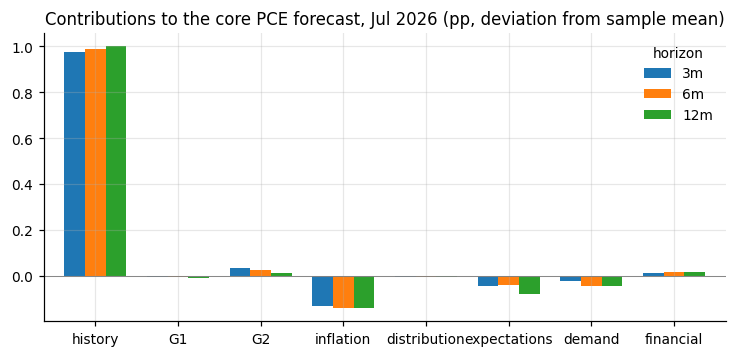
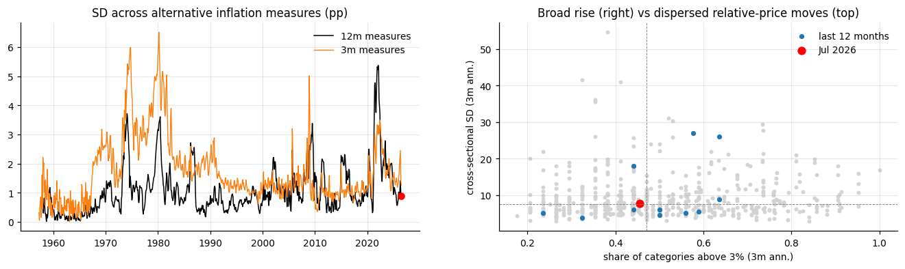

Report generated September 08, 2026; data through September 2026.
The question is what the current configuration of inflation-related indicators implies for future US inflation, how much the indicators agree or disagree with one another, and whether today's configuration resembles past episodes. The motivation is the current Fed debate, in which policymakers emphasize different statistics: recent inflation momentum, median and trimmed measures, the breadth of price increases, expectations, labor-market conditions, demand, and financial conditions.
All of these are treated as potentially useful signals for future inflation rather than sorted into 'measures of underlying inflation' and 'predictors'. A measure of underlying inflation is useful partly because it extracts the persistent, forecast-relevant component of current inflation, so the two roles are not distinct.
The approach has five steps. Predictors are organized into five blocks and each block is examined on its own. Two global factors are extracted from the full panel and one factor from each block's residual. Core PCE inflation is forecast at 3, 6, and 12 months with nested direct regressions. The current forecast is decomposed into contributions from inflation history and each factor, and forecast revisions are decomposed into news. Finally, disagreement across signals is measured, historical analogs are found, and disagreement is related to supply-like and demand-like episodes.
92 of 92 FRED series were downloaded and verified (first and last observations are in cache/series_verification.csv). Series starting after 1995 and therefore imputed in the early sample: T5YIE, T10YIE, T5YIFR, JTSJOL, JTSQUR, ECIWAG, DFII10, DTWEXBGS, CUSR0000SEHB, CUSR0000SEHG. The panel runs from 1985, when the breadth block first has at least 20 categories.
For each block the same diagnostic is shown: the variables are standardized, a principal-components decomposition is computed, and four panels report the scree (evidence of one versus several dimensions), the correlation of each variable with the first component (closer to one means more aligned with the block's common factor), the first component over time as a one-line summary of the block, and the residuals from the one-factor fit as a heatmap (whether recent months look different from history).
| indicator | source | transformation | |
|---|---|---|---|
| shorthand | |||
| cpi_{1,3,6,12}m | CPI, all items | BLS via FRED | annualized 1/3/6/12-month log change of the index |
| cpi_core_{1,3,6,12}m | CPI ex food and energy | BLS via FRED | annualized 1/3/6/12-month log change of the index |
| pce_{1,3,6,12}m | PCE price index | BEA via FRED | annualized 1/3/6/12-month log change of the index |
| pce_core_{1,3,6,12}m | PCE ex food and energy | BEA via FRED | annualized 1/3/6/12-month log change of the index |
| cpi_svc_xe_{1,3,6,12}m | CPI services ex energy services | BLS via FRED | annualized 1/3/6/12-month log change of the index |
| pce_svc_{1,3,6,12}m | PCE services price index | BEA via FRED | annualized 1/3/6/12-month log change of the index |
| cpi_median_{1,3,6,12}m | Median CPI | Cleveland Fed via FRED | published 1-month annualized and 12-month rates; 3m and 6m as rolling means of the 1-month rate |
| cpi_trim_{1,3,6,12}m | 16% trimmed-mean CPI | Cleveland Fed via FRED | published 1-month annualized and 12-month rates; 3m and 6m as rolling means of the 1-month rate |
| pce_trim_{1,3,6,12}m | Trimmed-mean PCE | Dallas Fed via FRED | published 1-month annualized and 12-month rates; 3m and 6m as rolling means of the 1-month rate |
| cpi_sticky_{1,3,6,12}m | Sticky-price CPI | Atlanta Fed via FRED | published 1-month annualized and 12-month rates; 3m and 6m as rolling means of the 1-month rate |
| cpi_core_sticky_{1,3,6,12}m | Core sticky-price CPI | Atlanta Fed via FRED | published 1-month annualized and 12-month rates; 3m and 6m as rolling means of the 1-month rate |
| cpi_flex_{1,3,6,12}m | Flexible-price CPI | Atlanta Fed via FRED | published 1-month annualized and 12-month rates; 3m and 6m as rolling means of the 1-month rate |
| cpi_core_flex_{1,3,6,12}m | Core flexible-price CPI | Atlanta Fed via FRED | published 1-month annualized and 12-month rates; 3m and 6m as rolling means of the 1-month rate |
Only levels at several horizons enter the block. Momentum and acceleration (3m minus 12m, changes in the 12m rate) are deliberately not included as separate indicators: they are linear combinations of what is already in the panel, and the PCA recovers them itself as contrasts, with opposite loadings on short- and long-horizon rates. The forecasting regressions in section 3 use momentum terms computed directly from core PCE.
PC1 is aligned positively with 6m rate (3), short-horizon rate (1m/3m) (3), 12m rate (2); e.g. cpi_trim_6m, pce_trim_6m, pce_core_12m; inverted: none. Reading: the common level of inflation across headline, core, trimmed and median measures at every horizon, a level factor.
PC2 is aligned positively with short-horizon rate (1m/3m) (6), 6m rate (2); e.g. cpi_flex_3m, cpi_flex_6m, cpi_flex_1m; inverted: none. Reading: recent momentum in sticky and median prices against their 12-month level, a turning-point factor: high when persistent inflation is low but re-accelerating, low when it is high but slowing (2022-23).
52 variables from 1985-01. The first three components explain 63, 14, and 4 percent of the variance, which points to one dominant dimension. The first component stands at -0.0 standard deviations today, the 58th percentile of its history. The largest deviations from what the common factor implies are pce_6m (+1.1 sd), pce_12m (+1.0 sd), cpi_flex_3m (-1.0 sd).
| Categories | |
|---|---|
| Group | |
| Food (7) | cereals; meats, poultry, fish, eggs; dairy; fruits and vegetables; other food at home; food away from home; alcohol |
| Energy (4) | gasoline; fuel oil; electricity; utility gas |
| Core goods (12) | men's, women's and infants' apparel; footwear; new and used vehicles; vehicle parts; medical commodities; household furnishings; tobacco; recreation commodities; educational books |
| Services (11) | rent; owners' equivalent rent; lodging away from home; water and sewer; professional medical and hospital services; vehicle maintenance; public transportation; tuition and childcare; personal care; other services |
| indicator | source | transformation | |
|---|---|---|---|
| shorthand | |||
| share_gt{0,2,3,4,5}_{3,6,12}m | share of categories with inflation above 0/2/3/4/5 percent | 34 CPI categories, BLS via FRED | count divided by categories available; computed on annualized 3/6/12-month category inflation |
| share_accel_{3,6,12}m | share of categories accelerating | 34 CPI categories, BLS via FRED | h-month rate above the 12-month rate (at h = 12: above the 12-month rate a year earlier); computed on annualized 3/6/12-month category inflation |
| share_decel_{3,6,12}m | share of categories decelerating | 34 CPI categories, BLS via FRED | as above, below; computed on annualized 3/6/12-month category inflation |
| xs_sd_{3,6,12}m | cross-sectional standard deviation | 34 CPI categories, BLS via FRED | across categories; computed on annualized 3/6/12-month category inflation |
| xs_iqr_{3,6,12}m | interquartile range | 34 CPI categories, BLS via FRED | 75th minus 25th percentile across categories; computed on annualized 3/6/12-month category inflation |
| xs_p90_p10_{3,6,12}m | 90-10 spread | 34 CPI categories, BLS via FRED | 90th minus 10th percentile; computed on annualized 3/6/12-month category inflation |
| xs_skew_{3,6,12}m | cross-sectional skewness | 34 CPI categories, BLS via FRED | computed on annualized 3/6/12-month category inflation |
| xs_median_{3,6,12}m | median category inflation | 34 CPI categories, BLS via FRED | computed on annualized 3/6/12-month category inflation |
| upper_tail_share_{3,6,12}m | upper-tail share | 34 CPI categories, BLS via FRED | share of the sum of absolute category inflation coming from the top decile; computed on annualized 3/6/12-month category inflation |
Cross-sectional statistics of annualized 3/6/12-month inflation across 34 CPI expenditure categories from FRED (SA), selected so that no category nests another; unbalanced panel (22 categories in the late 1980s, 34 from 1998; minimum 20). Shares above 0/2/3/4/5%, shares accelerating and decelerating, SD, IQR, 90-10 spread, skewness, median, upper-tail share. Unweighted only (BLS relative importances are not on FRED; WEIGHTS is the hook). A BEA detailed-PCE panel would be the upgrade.

PC1 is aligned positively with breadth (6), central tendency (2); e.g. xs_median_6m, share_gt4_6m, share_gt3_6m; inverted: none. Reading: breadth and central tendency of the price-change distribution, how many categories are rising fast; a broad-inflation factor.
PC2 is aligned positively with dispersion (2), breadth momentum (1); e.g. xs_iqr_6m, xs_iqr_3m, share_decel_3m; inverted: dispersion (4), breadth momentum (1); e.g. upper_tail_share_6m, xs_skew_6m, share_accel_3m. Reading: two-sided dispersion (IQR, share decelerating) against upper-tail concentration and skewness; separates wide relative-price dispersion from a few categories spiking.
39 variables from 1985-01. The first three components explain 42, 17, and 12 percent of the variance, which points to one dominant dimension. The first component stands at -0.0 standard deviations today, the 55th percentile of its history. The largest deviations from what the common factor implies are upper_tail_share_6m (+1.7 sd), share_decel_3m (+1.4 sd), xs_iqr_12m (-1.4 sd).
| indicator | source | transformation | |
|---|---|---|---|
| shorthand | |||
| mich_1y | Michigan 1-year expected inflation, median | Michigan survey via FRED | level, percent |
| clev_1y | Cleveland Fed 1-year expected inflation | Cleveland Fed via FRED | level |
| clev_10y | Cleveland Fed 10-year expected inflation | Cleveland Fed via FRED | level |
| bei_5y | 5-year breakeven inflation | Treasury via FRED | monthly mean of daily |
| bei_10y | 10-year breakeven | Treasury via FRED | monthly mean |
| bei_5y5y | 5y5y forward breakeven | Treasury via FRED | monthly mean |
| spf_cpi_4q | SPF median CPI forecast, next four quarters | Philadelphia Fed SPF (not on FRED) | mean of the individual CPI2-CPI5 forecasts, median across forecasters; quarterly spread to months |
| spf_cpi_4q_iqr | SPF cross-sectional IQR of the 4-quarter forecast | Philadelphia Fed SPF | 75th minus 25th percentile across forecasters |
| spf_cpi_4q_sd | SPF cross-sectional SD of the 4-quarter forecast | Philadelphia Fed SPF | across forecasters |
| spf_cpi_10y | SPF median 10-year CPI forecast | Philadelphia Fed SPF | quarterly spread to months |
Levels of expected inflation from households, professionals, a model and markets at short and long horizons, plus forecaster dispersion. Spreads between sources and horizons are not included as separate indicators; the PCA forms them as contrasts. Michigan 5-10 year expectations and Michigan respondent dispersion are not on FRED and are omitted rather than proxied.

PC1 is aligned positively with markets (3), model-based (2), professionals (2), households (1); e.g. clev_1y, spf_cpi_4q, clev_10y; inverted: none. Reading: the level of near-term expected inflation across professionals, the Cleveland model, markets and households, plus the slope of the expectations term structure; a near-term expectations factor.
PC2 is aligned positively with dispersion (2), markets (2), households (1); e.g. spf_cpi_4q_sd, spf_cpi_4q_iqr, mich_1y; inverted: model-based (2), professionals (1); e.g. clev_10y, spf_cpi_10y, clev_1y. Reading: households versus professionals, the model and markets, together with forecaster dispersion; an excess-household-expectations and disagreement factor, high when households expect more than everyone else.
10 variables from 1985-01. The first three components explain 38, 25, and 15 percent of the variance, which points to at least two dimensions of comparable size. The first component stands at +0.2 standard deviations today, the 52nd percentile of its history. The largest deviations from what the common factor implies are bei_5y (+0.5 sd), bei_10y (+0.5 sd), bei_5y5y (+0.1 sd).
| indicator | source | transformation | |
|---|---|---|---|
| shorthand | |||
| unrate | Unemployment rate | BLS via FRED | level, percent |
| payrolls_3m / payrolls_12m | Nonfarm payrolls | BLS via FRED | annualized 3- and 12-month log growth |
| claims_log | Initial claims | DOL via FRED | log of the monthly mean of weekly claims |
| vu_ratio | Job openings to unemployed | BLS JOLTS via FRED | ratio |
| quits | Quits rate | BLS JOLTS via FRED | level, percent |
| ahe_3m / ahe_12m | Average hourly earnings, production workers | BLS via FRED | annualized 3- and 12-month log growth |
| eci_wages_yoy | ECI wages and salaries | BLS via FRED | year-on-year percent, quarterly spread to months |
| comp_12m | Compensation of employees | BEA via FRED | 12-month log growth |
| real_pce_6m / real_pce_12m | Real PCE | BEA via FRED | annualized 6- and 12-month log growth |
| real_retail_6m | Real retail sales | Census via FRED | annualized 6-month log growth |
| ip_6m / ip_12m | Industrial production | Fed via FRED | annualized 6- and 12-month log growth |
| capu | Capacity utilization | Fed via FRED | level, percent |
| real_inv_yoy | Real gross private domestic investment | BEA via FRED | year-on-year, quarterly spread to months |
| gdp_yoy | Real GDP | BEA via FRED | year-on-year, quarterly spread to months |
| sentiment | Michigan consumer sentiment | Michigan via FRED | level |
Rates in levels, quantities as annualized 3/6-month or 12-month log growth, quarterly series spread over their quarter. Real business fixed and residential investment on FRED start in 2007, so total real private investment stands in.

PC1 is aligned positively with activity (6), wages (1), labor market (1); e.g. gdp_yoy, comp_12m, payrolls_12m; inverted: none. Reading: output and employment growth, the business-cycle factor.
PC2 is aligned positively with wages (3), labor market (2); e.g. ahe_12m, eci_wages_yoy, vu_ratio; inverted: activity (2), labor market (1); e.g. unrate, real_retail_6m, ip_6m. Reading: wage growth and labor-market tightness (V/U, quits) against the unemployment rate and retail momentum; a labor-tightness and wage-pressure factor distinct from output growth.
19 variables from 1985-01. The first three components explain 43, 21, and 8 percent of the variance, which points to one dominant dimension. The first component stands at -0.2 standard deviations today, the 28th percentile of its history. The largest deviations from what the common factor implies are claims_log (-1.6 sd), unrate (-1.1 sd), ahe_3m (-0.3 sd).
| indicator | source | transformation | |
|---|---|---|---|
| shorthand | |||
| fedfunds | Effective federal funds rate | Fed via FRED | monthly mean, percent |
| dgs2 / dgs10 | 2- and 10-year Treasury yields | Treasury via FRED | monthly mean of daily |
| real_10y_tips | 10-year TIPS yield | Treasury via FRED | monthly mean |
| real_10y_clev | 10-year real rate | derived | 10-year yield minus Cleveland Fed 10-year expected inflation (the expectation is in block 3, so this is not a within-block difference) |
| nfci / anfci | Chicago Fed NFCI and adjusted NFCI | Chicago Fed via FRED | monthly mean; positive = tighter |
| vix | VIX | Cboe via FRED | monthly mean |
| baa_spread | Moody's Baa yield minus 10-year Treasury | FRED (published spread) | monthly mean |
| gz_spread / ebp | Gilchrist-Zakrajsek spread and excess bond premium | Federal Reserve (not on FRED) | level |
| term_premium_10y | Kim-Wright 10-year term premium | Fed via FRED | monthly mean |
| equity_3m_ret / equity_12m_ret | Nasdaq composite | FRED | 3- and 12-month log return (the S&P 500 on FRED covers ten years only) |
| usd_12m | Broad dollar index | Fed via FRED | 12-month log change; 1973-2019 and 2006- indexes spliced at the overlap |
| oil_3m / oil_12m | WTI crude oil | FRED | 3- and 12-month log change |
| ppi_comm_12m | PPI all commodities | BLS via FRED | 12-month log change |
| sloos_ci | SLOOS net share tightening C&I standards | Fed via FRED | quarterly spread to months |
| mortgage30 | 30-year mortgage rate | Freddie Mac via FRED | monthly mean |
Monthly averages of daily data; policy and Treasury rates, term spread, real rates (TIPS and 10y minus Cleveland expectations), NFCI and adjusted NFCI, VIX, Baa spread, GZ spread and excess bond premium, term premium, equity returns (Nasdaq; the S&P 500 on FRED is limited to ten years), a spliced broad dollar, oil and commodity prices, SLOOS standards, mortgage spread. The factor is oriented so that positive = looser.

PC1 is aligned positively with none; inverted: rates (6), risk pricing (1), credit supply (1); e.g. mortgage30, real_10y_clev, dgs10. Reading: credit spreads, the excess bond premium, the NFCI and lending standards (inverted) with equity returns positive; a risk-appetite versus financial-stress factor, oriented so that higher = looser.
PC2 is aligned positively with risk pricing (4), conditions indexes (2), credit supply (1); e.g. gz_spread, baa_spread, ebp; inverted: asset prices (1); e.g. equity_12m_ret. Reading: the level of nominal and real interest rates, a rates-level factor independent of risk pricing.
20 variables from 1985-01. The first three components explain 31, 27, and 10 percent of the variance, which points to at least two dimensions of comparable size. The first component stands at +0.1 standard deviations today, the 57th percentile of its history. The largest deviations from what the common factor implies are real_10y_tips (+1.5 sd), baa_spread (-1.0 sd), vix (-0.5 sd).
The factor model is X = Lambda_G G + lambda_B B + e: two global factors common to the whole panel and one factor specific to each block. The implementation is simple: standardize the panel, extract two principal components, subtract the fitted global component, and take the first principal component of each block's residual. Signs are normalized so that every factor is oriented as inflationary pressure (the financial factor: looser conditions). A VAR(1) on the seven factors provides the dynamics used in the news decomposition.
The panel has 140 variables from 1985-01 to 2026-07. Two global PCs on the standardized panel explain 52% of its variance (G1 39%, G2 13%); one PC per block on the residual explains infl 20%, dist 28%, exp 50%, dem 31%, fin 34% of the block's residual variance. Every factor is oriented so that higher = more inflationary pressure (financial: looser). VAR(1) own-persistence: G1 0.97, G2 0.93, B_infl 0.85, B_dist 0.84, B_exp 0.86, B_dem 0.82, B_fin 0.96.
G1 is drawn from infl (10) among its top-10 correlates; aligned positively with infl 6m rate (4), infl 12m rate (4), infl short-horizon rate (1m/3m) (2); e.g. cpi_trim_6m, pce_trim_6m, cpi_trim_3m; inverted: none. Reading: the common inflation level, essentially the inflation block's level factor plus breadth; the state the median and trimmed measures try to track.
G2 is drawn from dem (5), fin (3), infl (2) among its top-10 correlates; aligned positively with dem activity (5), infl short-horizon rate (1m/3m) (1), infl 6m rate (1), fin asset prices (1); e.g. ip_12m, ip_6m, real_inv_yoy; inverted: fin credit supply (1), fin risk pricing (1); e.g. sloos_ci, ebp. Reading: inflation momentum against persistence (sticky and median momentum positive, their levels inverted), oriented with demand: a re-acceleration versus disinflation state.

Core PCE is the target. The dependent variables are future annualized core PCE inflation over 3, 6, 12 and 24 months, its change relative to today's 12-month rate, and an indicator for deceleration. Three nested direct regressions are compared: M1 uses inflation history and momentum only (12m rate, its 12-month lag, 3m and 6m rates, the 3-month change in the 12m rate, acceleration); M2 adds the two global factors; M3 adds the five block factors.
Forecasts are evaluated pseudo-out-of-sample with an expanding window, its change relative to today's 12m rate, and the deceleration indicator. Direct regressions with three nested information sets: M1 inflation history and momentum, M2 plus the global factors, M3 plus the block factors. Expanding-window pseudo-out-of-sample from 2000 with full-sample factor loadings (a look-ahead in the factor construction).
| RMSFE | rel_RMSFE | dir_acc | |||||||
|---|---|---|---|---|---|---|---|---|---|
| h | 3 | 6 | 12 | 3 | 6 | 12 | 3 | 6 | 12 |
| model | |||||||||
| M1 history | 0.94 | 0.81 | 0.84 | 1.00 | 1.00 | 1.00 | 0.57 | 0.58 | 0.64 |
| M2 +global | 0.97 | 0.85 | 0.86 | 1.03 | 1.04 | 1.02 | 0.55 | 0.56 | 0.60 |
| M3 +global+block | 0.99 | 0.87 | 0.91 | 1.05 | 1.07 | 1.09 | 0.56 | 0.56 | 0.61 |
| 3m | 6m | 12m | |
|---|---|---|---|
| G1 | -0.03 (-0.8) | -0.04 (-1.1) | -0.05 (-1.5) |
| G2 | +0.04 (+1.7) | +0.03 (+1.5) | +0.02 (+0.7) |
| B_infl | -0.14 (-4.0) | -0.16 (-4.9) | -0.16 (-3.9) |
| B_dist | +0.05 (+1.6) | +0.05 (+1.8) | +0.07 (+2.5) |
| B_exp | -0.02 (-0.3) | -0.02 (-0.3) | -0.04 (-0.5) |
| B_dem | +0.03 (+0.6) | +0.05 (+1.2) | +0.05 (+0.9) |
| B_fin | +0.02 (+0.3) | +0.02 (+0.3) | +0.02 (+0.3) |
| R2 M3 / M1 | 0.58 / 0.55 | 0.67 / 0.62 | 0.66 / 0.60 |
| 3m | 6m | 12m | |
|---|---|---|---|
| current 12m core PCE | 3.289443 | 3.289443 | 3.289443 |
| current h-month core PCE | 3.002253 | 3.400915 | 3.289443 |
| forecast M3 | 3.170209 | 3.152011 | 3.096077 |
| forecast M1 history | 3.183956 | 3.12467 | 3.033275 |
| forecast change vs 12m | -0.119233 | -0.137432 | -0.193366 |
| direction | decelerating | decelerating | decelerating |
| 90% band | [1.5, 4.8] | [1.7, 4.6] | [1.6, 4.6] |
For the linear M3 equation each contribution is the coefficient times the current value's deviation from its sample mean, so contributions sum to the forecast's deviation from the target's mean. This says which signals, at their current values, push the forecast away from its mean; it is not a news decomposition.

| 3m | 6m | 12m | |
|---|---|---|---|
| sample mean of target | 2.35 | 2.34 | 2.33 |
| history | 0.97 | 0.99 | 1.00 |
| G1 | -0.00 | -0.01 | -0.01 |
| G2 | 0.03 | 0.03 | 0.01 |
| inflation | -0.13 | -0.14 | -0.14 |
| distribution | -0.00 | -0.00 | -0.00 |
| expectations | -0.05 | -0.04 | -0.08 |
| demand | -0.02 | -0.04 | -0.04 |
| financial | 0.01 | 0.02 | 0.02 |
| forecast | 3.16 | 3.14 | 3.08 |
The factor system in state-space form (loadings from the PCA, VAR(1) dynamics, diagonal idiosyncratic variances), filtered month by month through the ragged edge (Sep 2026). News in each released series is its surprise relative to the previous month's information set; the revision of the factor-only 12m forecast is attributed through the Kalman gain. Latest-vintage values, so data revisions are ignored and publication lags enter only at the ragged edge. Filtered factors track the PCA factors (correlations G1 1.00, G2 0.97, B_infl 0.96, B_dist 0.98, B_exp 0.97, B_dem 0.97, B_fin 0.96). Sep 2026 revision +0.08 pp (exp +0.10, fin -0.01); cumulative over 12 months +0.14 pp; largest monthly revision Jun 2026 (0.57).

Do today's indicators agree about inflation more or less than they usually do? Four complementary measures are used.
A: cross-sectional SD of the seven standardized factors. B: residual RMS after fitting one common factor to the seven signals (it explains 46% of their variance): how poorly can today's signals be reconciled by one common state? C: SD across the eleven alternative inflation measures (pp). D: breadth versus dispersion within the distribution block.
| current | percentile | median | p90 | |
|---|---|---|---|---|
| D_sd (A) | 0.56 | 19.84 | 0.80 | 1.56 |
| D_res (B) | 0.57 | 46.49 | 0.59 | 0.99 |
| D_infl_12m (C) | 0.90 | 53.46 | 0.84 | 2.15 |
| D_infl_3m (C) | 1.27 | 41.95 | 1.39 | 3.25 |


When in the past did the configuration of inflation signals look most like today?
Nearest neighbors of today's standardized factor vector (Euclidean distance, excluding the last 24 months, at most one match per six-month window). Across the 15 analogs the median subsequent 12m core PCE is 1.68 (median change -0.03 pp, decelerating in 53%). Matching on the pattern of disagreement instead gives 2006-09, 2004-04, 2006-03, 2003-09, 2007-07 (median change -0.03). Not causal.
| distance | core PCE 12m then | next 3m | next 6m | next 12m | change 12m ahead | D_res then | |
|---|---|---|---|---|---|---|---|
| 2006-08 | 0.96 | 2.64 | 1.54 | 2.28 | 1.97 | -0.67 | 0.46 |
| 2004-04 | 1.00 | 1.99 | 1.65 | 1.71 | 2.09 | 0.09 | 0.55 |
| 2003-09 | 1.03 | 1.45 | 1.78 | 2.06 | 1.93 | 0.48 | 0.45 |
| 2007-07 | 1.14 | 2.02 | 2.73 | 2.55 | 2.22 | 0.20 | 0.32 |
| 2005-01 | 1.21 | 2.15 | 2.11 | 1.90 | 2.12 | -0.03 | 0.42 |
| 2006-02 | 1.23 | 2.12 | 3.32 | 2.77 | 2.52 | 0.41 | 0.44 |
| 2014-01 | 1.48 | 1.44 | 1.47 | 1.64 | 1.20 | -0.24 | 0.55 |
| 2005-07 | 1.52 | 2.09 | 2.36 | 2.34 | 2.51 | 0.42 | 0.35 |
| 2014-07 | 1.53 | 1.60 | 1.03 | 0.76 | 1.17 | -0.43 | 0.57 |
| 2018-05 | 1.65 | 1.96 | 0.93 | 1.52 | 1.55 | -0.41 | 0.51 |
| 2019-03 | 1.78 | 1.60 | 1.94 | 1.58 | 1.52 | -0.09 | 0.42 |
| 2013-01 | 1.85 | 1.58 | 1.00 | 1.33 | 1.44 | -0.14 | 0.66 |
| 2017-01 | 1.88 | 1.85 | 1.36 | 1.25 | 1.62 | -0.23 | 0.50 |
| 2013-07 | 1.93 | 1.48 | 1.58 | 1.55 | 1.60 | 0.12 | 0.78 |
| 2020-01 | 1.96 | 1.58 | -0.82 | 0.82 | 1.68 | 0.10 | 0.49 |
Hypothesis: disagreement between inflation indicators and demand or financial indicators may be especially common when inflation is driven by supply or relative-price shocks rather than aggregate demand. This section is descriptive: episodes are classified by inflation and demand, disagreement is compared across them, and its correlates and predictive content are tested.
Regimes from core PCE 12m and the demand block's first PC, each above or below its median. Current regime: adverse-supply-like (infl high, demand weak). Descriptive only; a sign-restricted VAR or external instruments would be the structural extension.
| months | D_res mean | D_res median | share D_res > p75 | next-12m change, median | |
|---|---|---|---|---|---|
| adverse-supply-like (infl high, demand weak) | 105 | 0.59 | 0.54 | 0.27 | -0.43 |
| demand-like (infl high, demand high) | 144 | 0.70 | 0.60 | 0.28 | -0.23 |
| favorable-supply-like (infl low, demand strong) | 106 | 0.56 | 0.55 | 0.09 | -0.01 |
| weak-demand (infl low, demand weak) | 144 | 0.73 | 0.65 | 0.32 | 0.04 |
| corr | t (HAC) | |
|---|---|---|
| headline_core_gap | -0.11 | -0.67 |
| flex_less_sticky | -0.01 | -0.06 |
| xs_sd_3m | 0.62 | 5.85 |
| oil_12m | -0.20 | -1.14 |
| abs_oil_12m | 0.49 | 4.16 |
| 3m | 6m | 12m | |
|---|---|---|---|
| beta D_res (pp per sd) | 0.06 | 0.07 | 0.11 |
| t | 0.95 | 1.34 | 1.87 |
| gamma pi12 | -0.18 | -0.21 | -0.29 |
| t | -3.28 | -3.43 | -3.91 |
| delta B_dem | -0.06 | -0.05 | -0.05 |
| t | -1.88 | -1.33 | -0.97 |
| R2 | 0.08 | 0.12 | 0.20 |
Four further pieces of evidence feed the answers in the next section: the probability that inflation will be lower over each horizon, a horse race of individual statistics as additions to core PCE 12m, the history of inflation conditional on breadth, and an event study of episodes in which the 3-month rate fell well below the 12-month rate.
| 3m | 6m | 12m | |
|---|---|---|---|
| P(lower) normal approx. | 0.55 | 0.56 | 0.58 |
| P(lower) logit | 0.65 | 0.69 | 0.69 |
| unconditional | 0.51 | 0.57 | 0.57 |
| rel RMSFE 3m | rel RMSFE 6m | rel RMSFE 12m | corr with core PCE 12m | type | |
|---|---|---|---|---|---|
| measure | |||||
| core PCE 3m | 1.00 | 0.99 | 0.99 | 0.85 | contemporaneous |
| core PCE 6m | 0.98 | 0.97 | 0.99 | 0.95 | contemporaneous |
| core PCE 3m-12m | 1.00 | 0.99 | 0.99 | -0.01 | no gain |
| core CPI 12m | 1.00 | 1.01 | 1.01 | 0.94 | contemporaneous |
| median CPI 12m | 1.00 | 1.01 | 1.02 | 0.81 | contemporaneous |
| median CPI 3m | 1.01 | 1.01 | 1.00 | 0.83 | contemporaneous |
| trimmed PCE 12m | 1.02 | 1.05 | 1.08 | 0.91 | contemporaneous |
| trimmed CPI 12m | 1.01 | 1.01 | 1.00 | 0.91 | contemporaneous |
| sticky CPI 12m | 0.99 | 1.00 | 1.01 | 0.86 | contemporaneous |
| flexible CPI 12m | 1.01 | 1.03 | 1.03 | 0.49 | no gain |
| breadth >3% (3m) | 1.01 | 1.01 | 1.02 | 0.72 | no gain |
| breadth >3% (12m) | 1.02 | 1.03 | 1.04 | 0.79 | no gain |
| xs dispersion (3m) | 1.01 | 1.01 | 1.00 | -0.01 | no gain |
| xs median (3m) | 1.01 | 1.01 | 1.02 | 0.75 | no gain |
| SPF dispersion | 1.04 | 1.07 | 1.07 | 0.36 | no gain |
| Michigan 1y | 1.01 | 1.03 | 1.03 | 0.60 | no gain |
| high breadth (top quartile) | low breadth (bottom quartile) | all | |
|---|---|---|---|
| months | 117.00 | 122.00 | 499.00 |
| core PCE 12m then | 3.64 | 1.57 | 2.37 |
| core PCE next 12m | 3.27 | 1.76 | 2.33 |
| P(next 12m > 2.5%) | 0.79 | 0.11 | 0.33 |
| mean change | -0.37 | 0.19 | -0.02 |
| P(decelerate) | 0.69 | 0.52 | 0.56 |
| core 12m | gap | 12m change ahead | turning point | reaccelerated within 6m | |
|---|---|---|---|---|---|
| date | |||||
| 1985-11 | 4.01 | -1.56 | -0.72 | True | True |
| 1989-08 | 3.87 | -1.22 | 0.39 | False | True |
| 1990-12 | 3.95 | -1.56 | -0.53 | True | False |
| 1997-08 | 1.70 | -1.00 | -0.28 | False | False |
| 2001-09 | 1.21 | -2.26 | 1.20 | False | True |
| 2008-10 | 1.62 | -1.29 | -0.39 | False | False |
| 2020-04 | 0.99 | -1.81 | 2.09 | False | True |
| 2023-07 | 4.21 | -1.45 | -1.44 | True | False |
Caveat: latest-vintage data and full-sample factor loadings; the news decomposition is pseudo-real-time (no data revisions; publication lags only at the ragged edge). Rule-based wording thresholds are in the answers section of run.py.